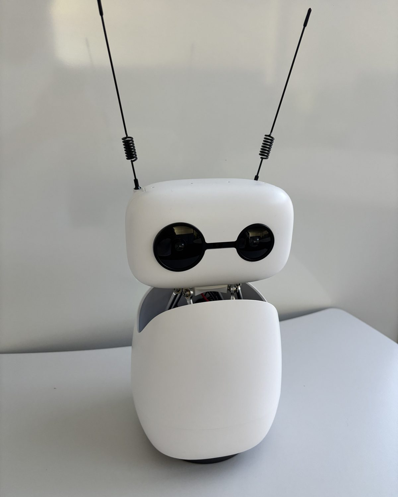
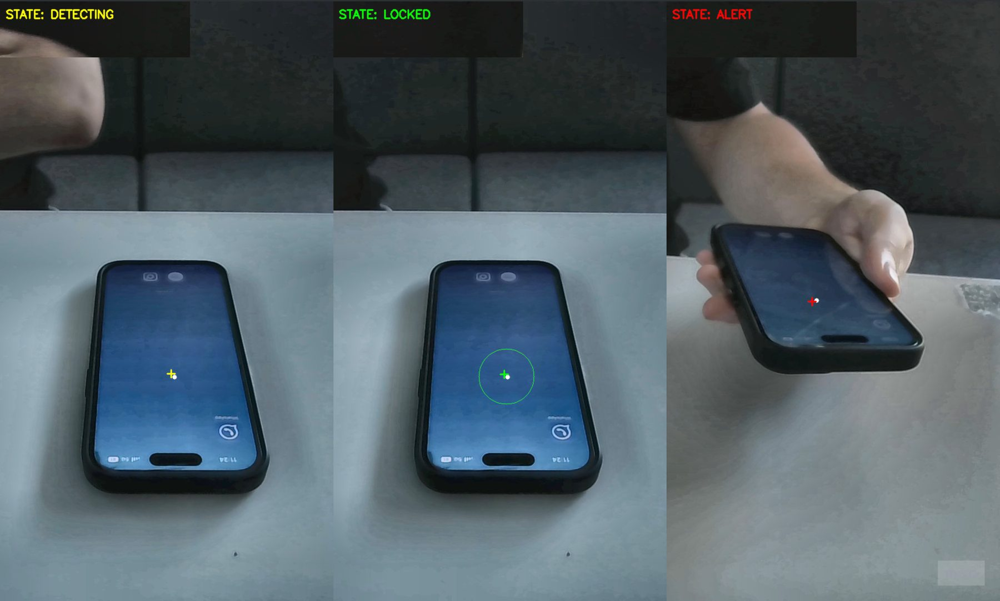
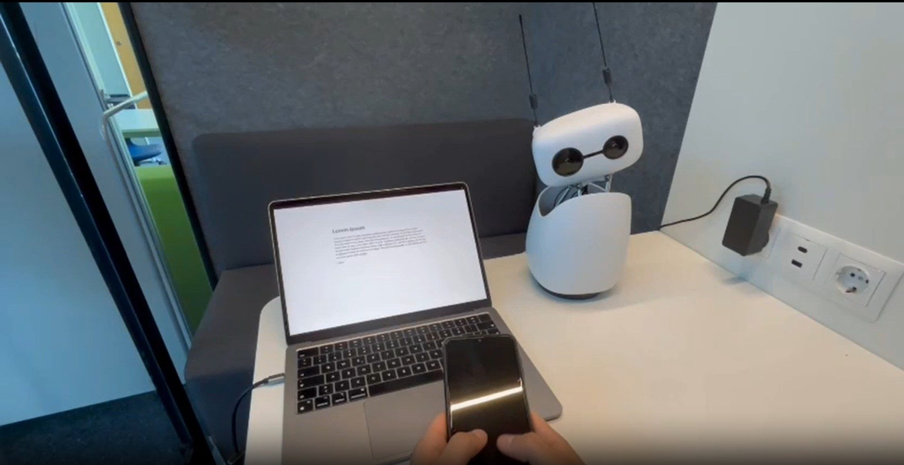

Mode A
Tech
Eine klare Maschine: präzise, logisch, ohne Emotion.
- Bewegung
- Linear, konstante Geschwindigkeit, harte Starts und Stopps
- Ton
- Mechanische, synthetische Signaltöne
„sounds like a bomb“
Ein Schreibtisch-Roboter gegen Handy-Prokrastination. Und die Frage, wie viel Persönlichkeit er dafür braucht.

App-Blocker lassen sich wegwischen. Ein Roboter auf dem Schreibtisch nicht. Wir haben untersucht, wie sozial ein solcher Roboter auftreten darf, damit er motiviert statt nervt. Dafür haben wir drei Verhaltensweisen in einer Video-Studie gegeneinander antreten lassen.
Die größte Ablenkung liegt direkt neben der Tastatur. Und alles, was dagegen hilft, läuft auf demselben Bildschirm.
Screen-Time-Dashboards, App-Blocker und Fokus-Timer lassen sich wegklicken, pausieren oder deinstallieren, und man gewöhnt sich schnell an sie. Ein Roboter, der physisch mit im Raum ist, wirkt nachweislich überzeugender als ein Bildschirm-Agent. Unsere Idee: eine Erinnerung, die man nicht wegwischen kann.
der Studierenden prokrastinieren regelmäßig bei Aufgaben, die ihnen eigentlich wichtig sind.
Svartdal et al., 2020Studierende zeigten: Intensive Smartphone-Nutzung hängt mit mehr akademischem Aufschieben zusammen.
Chang, 2025Roboter im selben Raum überzeugen stärker als Roboter auf dem Bildschirm oder virtuelle Agenten.
Li, 2015Eine Live-Erkennung mit YOLOv8n beobachtet über die Kamera des Roboters den Schreibtisch. Ein geglätteter Tracker und eine kleine Zustandsmaschine entscheiden, wann aus „liegt da“ ein „wurde aufgehoben“ wird, und lösen dann die Reaktion aus.

Wartet, bis das Handy ruhig auf dem Tisch liegt.
Merkt sich die Position als Referenz.
Verlässt das Handy einen 50-Pixel-Radius, reagiert der Roboter.
Jede Reaktion folgt demselben Gerüst nach Skinner. Nur wie der Roboter sich dabei bewegt und klingt, unterscheidet die drei Modi.
Der Roboter reagiert sofort und wendet sich dir zu.
Solange du am Handy bist, bleibt der Druck bestehen.
Hörst du nicht auf, dreht er sich enttäuscht weg.
Liegt es wieder, schaut er zurück und freut sich.
Reachy Mini hat kein Gesicht, das sich bewegen kann. Alles, was er ausdrückt, läuft über Kopfhaltung, Körperdrehung, zwei Antennen und Ton. Daraus haben wir drei Modi mit unterschiedlich viel sozialem Ausdruck gebaut.
Eine klare Maschine: präzise, logisch, ohne Emotion.
„sounds like a bomb“
Ein kleines Wesen: organisch, emotional, ohne Worte.
„perfect mixture of intelligence“
Ein frecher Kumpel: spricht, zählt runter, wird sarkastisch.
„I would immediately put my phone down“
Alle drei Modi wurden am selben Tisch, aus derselben Perspektive und mit derselben Handlung aufgenommen. Nur das Verhalten des Roboters ändert sich. 21 Teilnehmende haben die Videos in zufälliger Reihenfolge gesehen und jeden Modus mit der Human-Robot Interaction Evaluation Scale (HRIES) und dem TAM-Konstrukt Perceived Usefulness bewertet.

Noch bevor sie den Roboter in Aktion gesehen haben, sollten die Teilnehmenden angeben, wie er kommunizieren würde. Und welche Persönlichkeit sie ihm zutrauen: vor allem verträglich und freundlich, kaum streng.
Mode B wurde signifikant geselliger und lebendiger wahrgenommen als der Tech-Modus und auch signifikant geselliger als der sprechende Modus. Beim Störempfinden, bei der Nützlichkeit und im Ranking lag er ebenfalls vorn, dort allerdings nur als Tendenz ohne Signifikanz.
Mittelwerte je Modus auf einer 7-stufigen Skala · N = 21 · Messwiederholungs-ANOVA, Tukey-Post-hoc · n. s. = nicht signifikant
„Voice is creepy, text is brainrot.“
Über Mode C„Unclear why I should use a robot and not an app.“
Grundsätzliche Kritik„He made me anxious so I would not be focused.“
Über Mode CEin reiner Alarm wirkt kalt und erschreckt. Ein sprechender Roboter erzeugt Druck, Schuldgefühle und wird selbst zur Ablenkung. Am besten funktioniert ein Begleiter, der organisch reagiert und sich über Laute statt Worte ausdrückt: präsent, aber nicht aufdringlich. Gleichzeitig zeigt die Studie, wie unterschiedlich Menschen solche Eingriffe empfinden. Eine Einheitslösung gibt es nicht.